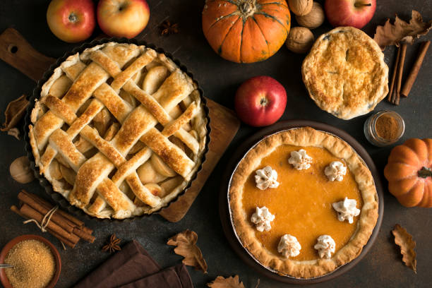

Pie

Description
A pie is a baked dish which is usually made of a pastry dough casing that
contains a filling of various sweet or savoury ingredients. Sweet pies may
be filled with fruit (as in an apple pie), nuts (pecan pie), brown sugar
(sugar pie), sweetened vegetables (rhubarb pie), or with thicker fillings
based on eggs and dairy (as in custard pie and cream pie). Savoury pies
may be filled with meat (as in a steak pie or a Jamaican patty), eggs and
cheese (quiche) or a mixture of meat and vegetables (pot pie).
Pies are defined by their crusts. A filled pie (also single-crust or
bottom-crust), has pastry lining the baking dish, and the filling is
placed on top of the pastry but left open. A top-crust pie has the filling
in the bottom of the dish and is covered with a pastry or other covering
before baking. A two-crust pie has the filling completely enclosed in the
pastry shell. Shortcrust pastry is a typical kind of pastry used for pie
crusts, but many things can be used, including baking powder biscuits,
mashed potatoes, and crumbs.
Ingredients
- ½ cup butter
- 1 cup brown sugar
-
5 Granny Smith apples -- peeled, cored, quartered, and thinly sliced
- 3 (9 inch) refrigerated prerolled pie crusts
- 1 cup white sugar, divided
- 2 teaspoons ground cinnamon, divided
- ¼ cup white sugar
- 1 tablespoon butter, cut into small chunks
Steps
- Preheat oven to 350 degrees F (175 degrees C).
-
Place 1/2 cup butter into a heavy cast iron skillet, and melt butter in
the oven. Remove skillet and sprinkle with brown sugar; return to oven
to heat while you prepare the apples.
-
Remove skillet, and place 1 refrigerated pie crust on top of the brown
sugar. Top the pie crust with half the sliced apples. Sprinkle apples
with 1/2 cup of sugar and 1 teaspoon of cinnamon; place a second pie
crust over the apples; top the second crust with the remaining apples,
and sprinkle with 1/2 cup sugar and 1 teaspoon cinnamon. Top with the
third crust; sprinkle the top crust with 1/4 cup sugar, and dot with 1
tablespoon of butter. Cut 4 slits into the top crust for steam.
-
Bake in the preheated oven until the apples are tender and the crust is
golden brown, about 45 minutes. Serve warm.